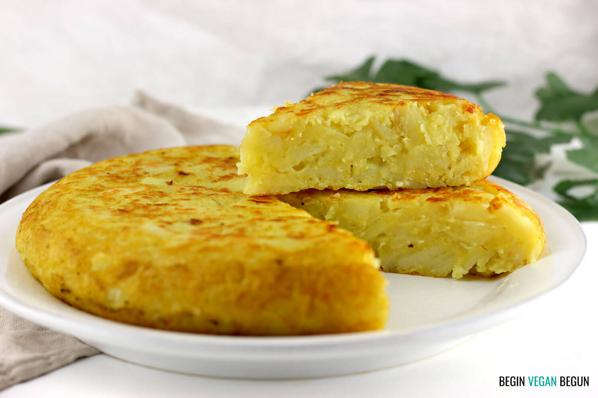
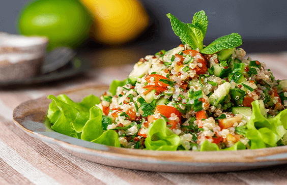
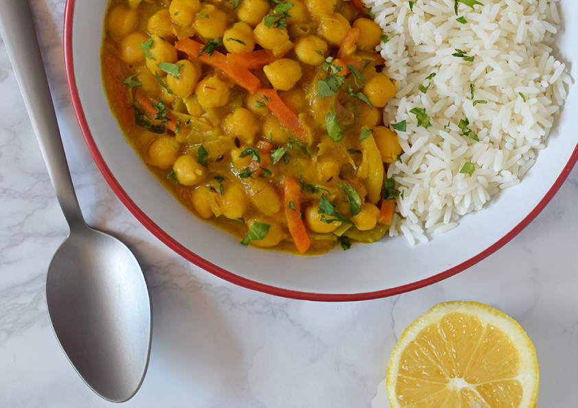

Tortilla jugosa vegana de calabacín

Una opción saludable y deliciosa para aquellos que buscan una alternativa vegetariana a la clásica tortilla de huevo.
Lps. 250.00
Una opción saludable y deliciosa para aquellos que buscan una alternativa vegetariana a la clásica tortilla de huevo.
Está hecha con calabacines frescos y otros ingredientes veganos de alta calidad, como harina de garbanzo, levadura nutricional y especias. Cada bocado está lleno de sabor y textura, con la consistencia perfecta de una tortilla tradicional. Además, es una opción baja en grasas y alta en proteínas vegetales.
Lps. 250.00
Revuelto vegano de tofu

El tofu es la base perfecta para crear una textura suave y cremosa, y se mezcla con una variedad de verduras frescas y condimentos sabrosos para crear un plato lleno de sabor y nutrientes.
Lps. 250.00
El tofu es la base perfecta para crear una textura suave y cremosa, y se mezcla con una variedad de verduras frescas y condimentos sabrosos para crear un plato lleno de sabor y nutrientes.
Este revuelto es una opción perfecta para el desayuno o el almuerzo, y puede ser disfrutado solo o acompañado de una tostada de pan integral o una ensalada fresca.
Lps. 250.00
Tortilla de patatas vegana

Es una deliciosa alternativa para aquellos que buscan una opción libre de productos animales, pero sin comprometer el sabor o la textura de este plato clásico español.
Lps. 250.00
Es una deliciosa alternativa para aquellos que buscan una opción libre de productos animales, pero sin comprometer el sabor o la textura de este plato clásico español.
Nuestra receta de tortilla de patatas vegana es baja en grasas saturadas y alta en proteínas y fibra, lo que la hace ideal para aquellos que buscan llevar una dieta saludable. Además, es fácil de preparar y es una opción perfecta para un desayuno, un almuerzo o una cena ligera.
Lps. 250.00
Ensalada de quinoa, calabaza asada y granada

Nuestra ensalada es una explosión de sabores y nutrientes en cada bocado. La quinoa es una fuente rica en proteínas y fibra, mientras que la calabaza asada aporta un sabor dulce y suave, y la granada agrega un toque fresco y crujiente a la mezcla.
Lps. 250.00
Nuestra ensalada es una explosión de sabores y nutrientes en cada bocado. La quinoa es una fuente rica en proteínas y fibra, mientras que la calabaza asada aporta un sabor dulce y suave, y la granada agrega un toque fresco y crujiente a la mezcla.
La ensalada está hecha con ingredientes naturales y frescos, y es una opción vegana y libre de gluten, lo que la hace ideal para aquellos con requisitos dietéticos especiales.
Lps. 250.00
Fideos de arroz con salteado de tofu y pimiento

Los fideos de arroz son una alternativa sin gluten y baja en grasas saturadas a los fideos tradicionales, y el tofu y los pimientos agregan un toque de proteína y sabor al plato.
Lps. 250.00
Los fideos de arroz son una alternativa sin gluten y baja en grasas saturadas a los fideos tradicionales, y el tofu y los pimientos agregan un toque de proteína y sabor al plato.
El Tofu es una fuente rica en proteínas y baja en grasas saturadas, elaborada a partir de leche de soja coagulada. Es un ingrediente perfecto para saltear y absorbe muy bien los sabores de los condimentos y las especias.
Lps. 250.00
Curry de garbanzos con mango

Nuestro curry de garbanzos con mango y arroz es una deliciosa combinación de sabores dulces y picantes en cada bocado.
Lps. 250.00
Nuestro curry de garbanzos con mango y arroz es una deliciosa combinación de sabores dulces y picantes en cada bocado.
Los garbanzos son una excelente fuente de proteínas vegetales y fibra, mientras que el mango agrega un toque fresco y dulce a la mezcla. Servido con arroz, este plato es una opción nutritiva, satisfactoria y deliciosa.
Lps. 250.00
Tu Carrito
Tu Total